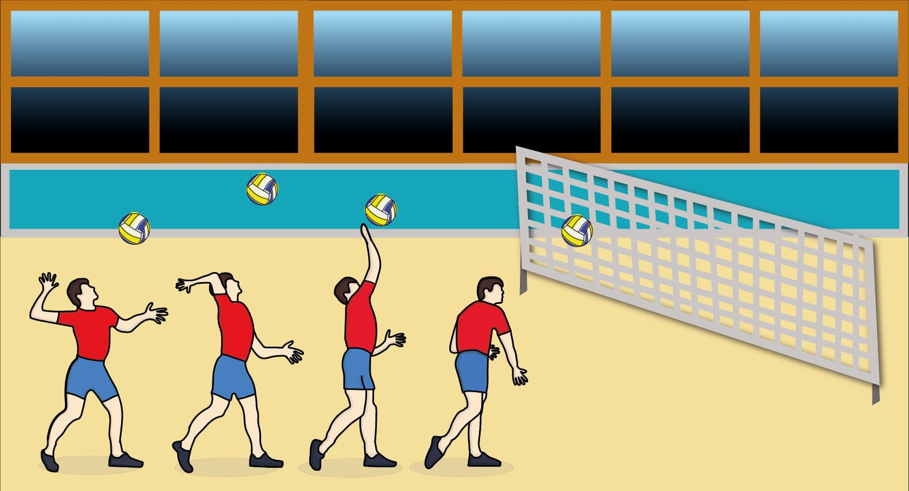
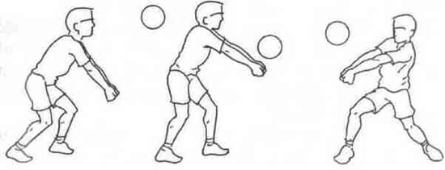
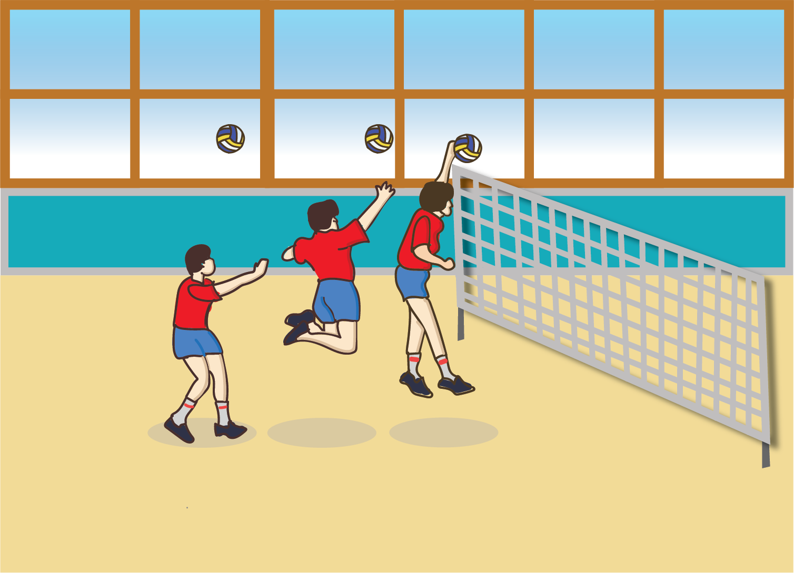
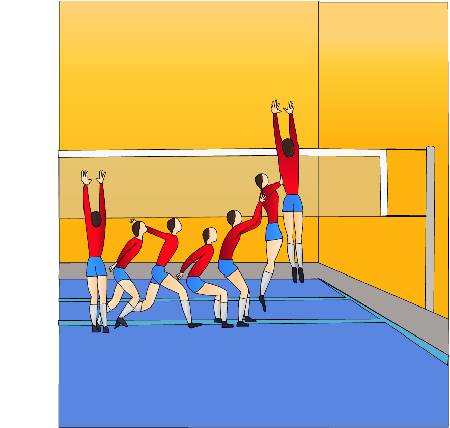

Técnicas do Voleibol
Clique Aqui para voltar para a página inicial
As Técnicas do Vôlei são:
1-Saque por Baixo
2-Saque por Cima

3-Recepção ou Passe

4-Levantamento
5-Ataque ou Defesa

6-Bloqueio

Clique Aqui para retornar ao topo